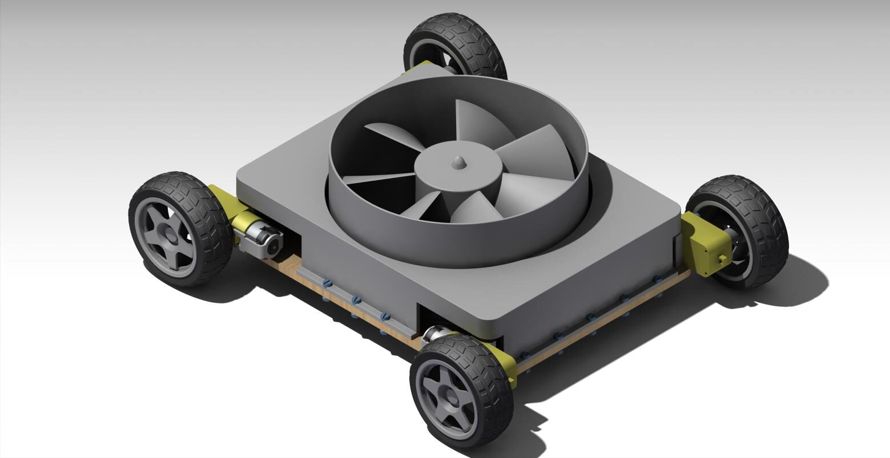

Graduation project · Sole designer
Wall-Climbing Robot for Silo Inspection
Self-proposed project: a robot that sticks to vertical walls using fan-generated negative pressure. Modelled every part and the full assembly in CATIA V5, including a propeller built from a NACA 0015 profile, then simulated the airflow in Ansys Fluent.
≈5 Npredicted thrust (CFD)
500 grobot mass
£75total budget
Traced an adhesion failure to air leaking through the ground clearance and fixed it with a compliant foam seal. When the printed propellers failed under load, I simulated a commercial fan in CFD and redesigned the housing around it.